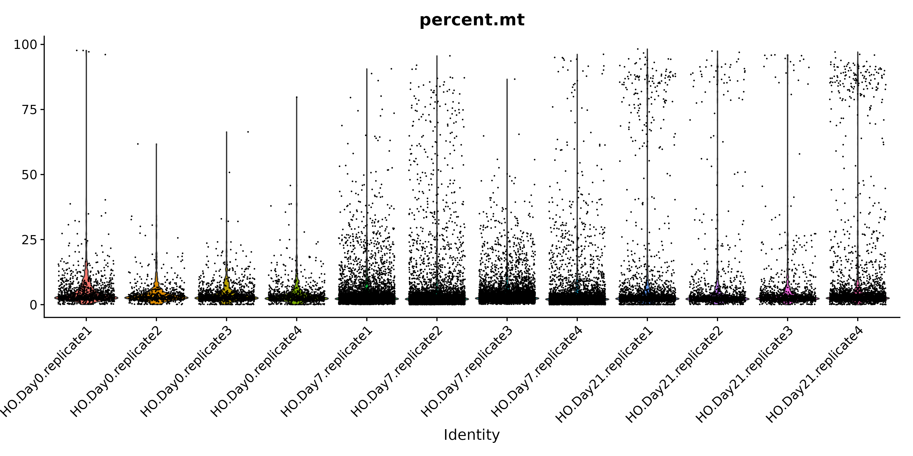

Workflow Overview

Objectives
- Discuss QC measures and learn how to calculate and plot them.
- Discuss cell-filtering approaches and apply them to our
dataset.
Introduction
As discussed at the start of the workshop, single-cell experiments
using 10x Chromium instrument aim to have droplets with one cell plus
one bead. However this is an inherently imperfect process and there are
other important considerations like how healthy or intact the cell was
at the time of measurement.
In this section, our goal is to use filtering thresholds to remove
“cells” that were poorly measured or either not cells at all or included
more than one cell.
Similar to many other areas of research, there are often gaps between
how single-cell data is presented versus the reality of running an
analysis. For example, only the final filtering thresholds might be
reported in a paper but our process for choosing those is likely to be
more iterative and include some trial and error.
Quality Metrics
Cell Ranger is a first-pass filter to determine what is a “cell” and
what is not. Let’s dig deeper to determine when a droplet might contain
two cells, a very stressed cell, or some technical issue in the library
preparation. We will use some common metrics to determine low-quality
cells based on their expression profiles (reference).
- The total number of UMIs detected. Cells with a small number of UMIs
detected may indicate loss of RNA during library preparation via cell
lysis or inefficient cDNA capture / amplification. Cells with relatively
high number of UMIs detected may indicate a doublet.
- The number of expressed features, defined as number of genes with
non-zero counts. Cells with very few measured genes are likely to be of
low-quality, and may distort downstream variance estimation or dimension
reduction steps.
- The proportion of reads mapped to the mitochondrial genome. High
proportions of mitochondrial transcripts may indicate a damaged cell,
the measure of which may also distort downstream analysis steps.
The number of UMIs detected (nCount) and number of
expressed features (nFeature) are already given in the meta
data table.
head(geo_so@meta.data)
orig.ident nCount_RNA nFeature_RNA
HODay0replicate1_AAACCTGAGAGAACAG-1 HODay0replicate1 9258 2709
HODay0replicate1_AAACCTGAGGAGTACC-1 HODay0replicate1 99 76
HODay0replicate1_AAACCTGAGGATCGCA-1 HODay0replicate1 71 55
HODay0replicate1_AAACCTGAGGCATTGG-1 HODay0replicate1 63 53
HODay0replicate1_AAACCTGCAACAACCT-1 HODay0replicate1 70 54
HODay0replicate1_AAACCTGCACCACCAG-1 HODay0replicate1 131 104
We can add arbitrary per-cell information to this table such as:
- Summary statistics, such as percent mitochondrial reads for each
cell
- Batch, condition, etc. for each cell
- Cluster membership for each cell
- Cell cycle phase for each cell
- Other custom annotations for each cell
In this workshop we will see examples of the first three, beginning
with percent mitochondrial reads.
Why total UMIs instead of total reads?
Since a single-cell inherently contains a limited amount of RNA
molecules, a higher amount of PCR amplification is required to generate
the final sequencing library.
Since PCR can skew proportions of initial input materials, specific
sequences are included in the initial capture probes called unique
molecule identifiers (UMIs). As each initial probe has a different UMI
sequence, each RNA captured will be tagged with a different UMI, which
allows those initial RNAs and subsequent PCR duplicates to be identified
and duplicates collapsed as part of the initial processing by
CellRanger.
Other
meanings of nFeatures
For other single-cell data types, nFeatures would
represent what’s being measured in that experiment. For single-cell
ATAC-seq, nFeatures would represents the total number of
peaks (e.g. accessible areas of DNA) per cell.
Percent mitochondrial reads
The PercentageFeatureSet() function enables us to
quickly determine the counts belonging to a subset of the possible
features for each cell. Since mitochondrial transcripts in mouse begin
with “mt”, we will use that pattern to count the percentage of reads
coming from mitochondrial transcripts.
# We use "mt" because this is mouse, depending on the organism, this might need to be changed
geo_so@meta.data$percent.mt = PercentageFeatureSet(geo_so, pattern = '^mt-')
# Alternate way to add this column
geo_so$percent.mt = PercentageFeatureSet(geo_so, pattern = '^mt-')
# Alternate way to add this column
geo_so[['percent.mt']] = PercentageFeatureSet(geo_so, pattern = '^mt-')
# Use summary() to quickly check the range of values
summary(geo_so$percent.mt)
Min. 1st Qu. Median Mean 3rd Qu. Max.
0.000 2.582 3.860 13.752 22.951 97.461
Just looking at the summary, we can see that there are some cells
with a high percentage of mitochondrial reads.
Identifying low-quality cells
To identify low-quality cells, it’s helpful to visualize the QC
metrics across all cells and samples to understand the the
distributions. Let’s plot nFeature_RNA,
nCount_RNA, and percent.mt.
Visualizing QC metrics
A violin plot can help show the distributions of a quantity across
multiple samples. Seurat has a built-in function, VlnPlot()
to quickly generate the plots we seek. As we make our plots, we’ll save
them to a file so we have them handy outside of R, perhaps to include in
a report or to share with collaborators. Let’s begin with the
nFeature_RNA violin plot.
VlnPlot(geo_so, features = 'nFeature_RNA', assay = 'RNA', layer = 'counts') + NoLegend()
ggsave(filename = 'ISC_R/results/figures/qc_nFeature_violin.png', width = 12, height = 6, units = 'in')

We already note that the Day0 samples appear to have systematically
lower features detected per cell, with sample HODay0repoilcate1
appearing to have much lower features per cell. Let’s continue with the
nCount_RNA plot.
VlnPlot(geo_so, features = 'nCount_RNA', assay = 'RNA', layer = 'counts') + NoLegend()
ggsave(filename = 'ISC_R/results/figures/qc_nCount_violin.png', width = 12, height = 6, units = 'in')

We obesrve a similar pattern, where the Day0 samples appear to have
lower counts per cell than their Day7 and Day21 counterparts. There is
even an outlier cell in HODay0replicate1, with over 90K unique UMIs
detected. This cell is very likely a doublet. Finally, lets plot the
percent.mt.
VlnPlot(geo_so, features = 'percent.mt', assay = 'RNA', layer = 'counts') + NoLegend()
ggsave(filename = 'ISC_R/results/figures/qc_mito_violin.png', width = 12, height = 6, units = 'in')

Immediately, HODay0replicate1 appears to have many cells with a high
percentage of mitochondrial reads. We observe that the other samples
appear to have a few cells with high percentage of mitochondrial reads,
but overall most cells tend to have <10% mitochondrial reads. This is
a good sign.
Generally, many tutorials use a cutoff of 5-10% mitochondrial.
However, for some experiments high mitochondrial reads would be expected
(such as in cases where the condition/treatment or genotype increases
cell death), then a relaxed threshold would be necessary to preserve
biologically relevant cells.
Cell counts
It’s a good idea to record how many cells we started with in our
experiment, and how many cells we have after filtering. So before we
discuss filtering further, let’s record the number of cells per
sample.
cell_counts_pre_tbl = geo_so@meta.data %>% count(orig.ident, name = 'prefilter_cells')
cell_counts_pre_tbl
orig.ident prefilter_cells
1 HODay0replicate1 12666
2 HODay0replicate2 614
3 HODay0replicate3 1191
4 HODay0replicate4 949
5 HODay21replicate1 1607
6 HODay21replicate2 932
7 HODay21replicate3 967
8 HODay21replicate4 1986
9 HODay7replicate1 3405
10 HODay7replicate2 3694
11 HODay7replicate3 3786
12 HODay7replicate4 2964
It appears that Cell Ranger called many more cells in
HODay0replicate1 than the other samples. Based on the QC visualization,
probably erroneously so.
Using fixed thresholds
After looking at the plots of nFeature_RNA,
nCount_RNA, and percent.mt, we could decide to
consider cells with <500 genes per cell, and >25% mitochondrial
reads as low-quality, and filter the cells using the
subset() function. Sorkin et
al. chose these thresholds:
We filtered out cells with less than 500 genes per cell and with more
than 25% mitochondrial read content.
We could preview what the resulting cell counts would be with these
thresholds:
subset(geo_so, subset = nFeature_RNA > 500 & percent.mt < 25)@meta.data %>%
count(orig.ident, name = 'postfilter_cells')
orig.ident postfilter_cells
1 HODay0replicate1 1003
2 HODay0replicate2 571
3 HODay0replicate3 1111
4 HODay0replicate4 876
5 HODay21replicate1 1537
6 HODay21replicate2 907
7 HODay21replicate3 945
8 HODay21replicate4 1956
9 HODay7replicate1 3265
10 HODay7replicate2 3578
11 HODay7replicate3 3668
12 HODay7replicate4 2903
This removes a sizeable number of cells from HODay0replicate1, and
brings that sample into line with the other samples.
Using adaptive thresholds
We could choose to remove outlier cells adaptively. This approach
assumes that most of the cells are of acceptable quality. Note, we’ve
already seen that many of the cells in HODay0replicate1 appear to be of
poor quality, and many of the Day0 cells have much lower
nCounts and nFeatures than their Day7 and
Day21 counterparts. For thus workshop we will use the above fixed
thresholds to match the publication.
Removing low-quality cells
Let’s remove the cells with nFeature_RNA <= 500 and
percent.mt >= 25.
geo_so = subset(geo_so, subset = nFeature_RNA > 500 & percent.mt < 25)
Note that the subset() command uses an expression in
terms of the cells we want to keep. Now we’ll take a
look at the cells per sample post-filtering:
cell_counts_post_tbl = geo_so@meta.data %>% count(orig.ident, name = 'postfilter_cells')
cell_counts_post_tbl
orig.ident postfilter_cells
1 HODay0replicate1 1003
2 HODay0replicate2 571
3 HODay0replicate3 1111
4 HODay0replicate4 876
5 HODay21replicate1 1537
6 HODay21replicate2 907
7 HODay21replicate3 945
8 HODay21replicate4 1956
9 HODay7replicate1 3265
10 HODay7replicate2 3578
11 HODay7replicate3 3668
12 HODay7replicate4 2903
Looking at the total number of cells per sample is helpful to
understand both how the called “cells” compare to what was expected for
the experiment. It also allows us to determine the impact of our
filtering thresholds. Let’s combine the pre and post tables:
cell_counts_tbl = cell_counts_pre_tbl %>% left_join(cell_counts_post_tbl, by = 'orig.ident')
cell_counts_tbl
orig.ident prefilter_cells postfilter_cells
1 HODay0replicate1 12666 1003
2 HODay0replicate2 614 571
3 HODay0replicate3 1191 1111
4 HODay0replicate4 949 876
5 HODay21replicate1 1607 1537
6 HODay21replicate2 932 907
7 HODay21replicate3 967 945
8 HODay21replicate4 1986 1956
9 HODay7replicate1 3405 3265
10 HODay7replicate2 3694 3578
11 HODay7replicate3 3786 3668
12 HODay7replicate4 2964 2903
Let’s also write this table to a file.
write_csv(cell_counts_tbl, file = 'ISC_R/results/tables/cell_filtering_counts.csv')
Adding phenotype data
The orig.ident column of the meta.data
table includes both replicate and day information. We’d like to use this
column to create new columns for day and replicate. Both of which will
come in handy later.
# Add .s separating the information in orig.ident
# NOTE, this relies on a uniform naming scheme!
geo_so$orig.ident = gsub('HO', 'HO.', geo_so$orig.ident)
geo_so$orig.ident = gsub('rep', '.rep', geo_so$orig.ident)
# Add day information
geo_so$day = str_split(geo_so$orig.ident, pattern = '[.]', simplify = TRUE)[,2]
# Add replicate column
geo_so$replicate = str_split(geo_so$orig.ident, pattern = '[.]', simplify = TRUE)[,3]
Summary
In this section we:
- Discussed quality metrics
nFeatures,
nCounts, and percent.mt.
- Visualized these metrics across cells / samples to help identify
low-quality cells.
- Filtered low-quality cells using fixed thresholds.
Next steps: dimensionality reduction using PCA
These materials have been adapted and extended from materials listed
above. These are open access materials distributed under the terms of
the Creative
Commons Attribution license (CC BY 4.0), which permits unrestricted
use, distribution, and reproduction in any medium, provided the original
author and source are credited.
